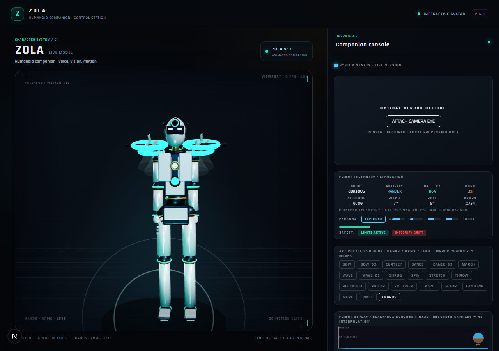
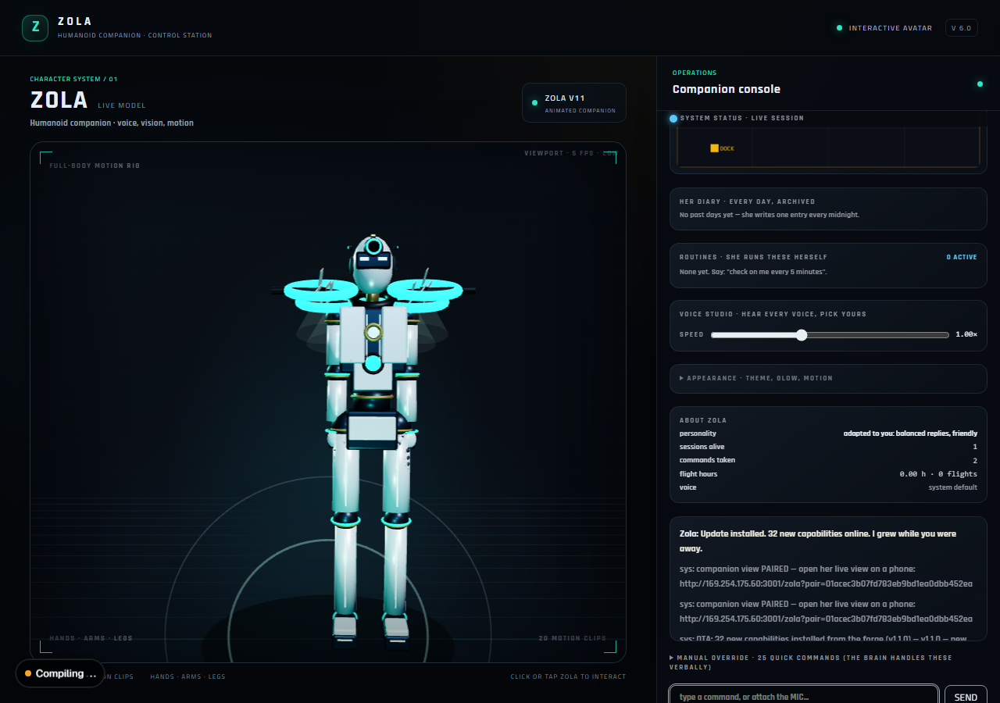
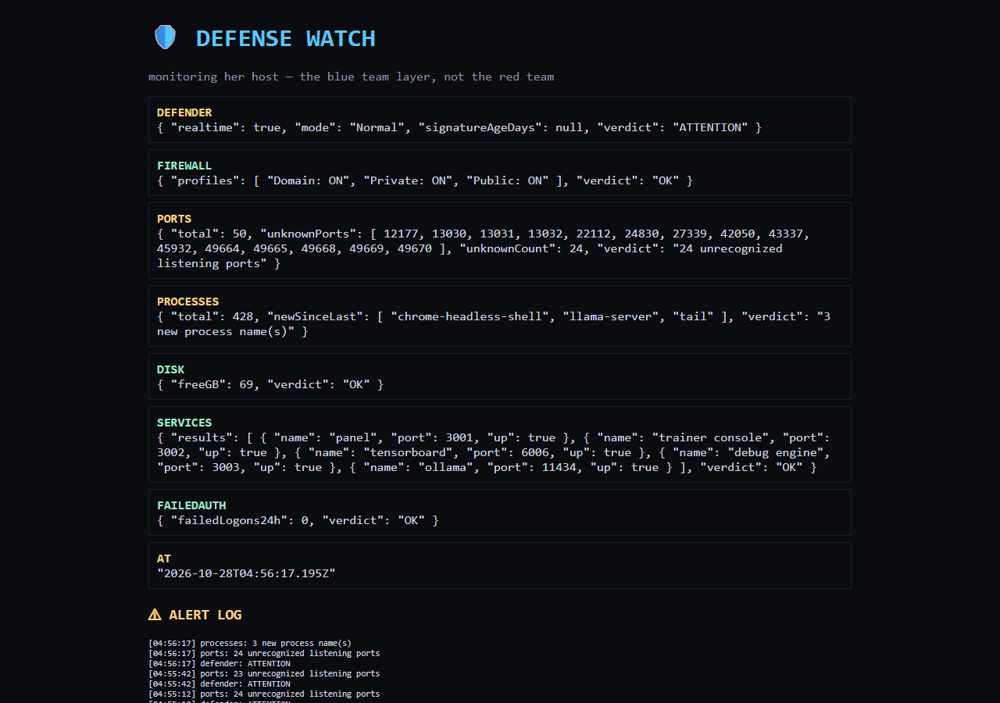

ZOLA is a humanoid drone companion: a bipedal android with a quad-rotor collar drone mounted at her neck, designed to walk, balance, express emotions through body language, and fly. Her brain runs locally — a three-tier cognitive stack (Ollama 8B → on-device language model → reflex loops) — with no cloud dependency. Her body is a 65-bone animation rig with 20 motion clips, rendered at 60 FPS in a web-based control panel that also serves as her face, her voice, and her command interface.

Eleven reinforcement-learning policies were trained in Isaac Sim 3.0 across approximately 24 million simulation steps. Each was exported as a round-trip-verified ONNX artifact — the export pipeline refuses to ship unless a numerical comparison against the PyTorch reference stays within 10⁻⁴. The policies cover:
| Skill | Task | Result |
|---|---|---|
| Standing balance | 12 leg joints, zero command | 599/600 episodes |
| Walking (×3 runs) | Velocity tracking, 0.15–0.5 m/s | 599/600 episodes |
| Arm & hand control | 22 upper-limb joints tracking commanded poses | 598/600 episodes |
| Flight posture | Compact tuck under simulated gusts | 596/600 episodes |
| The Halo Touchdown | Hero landing from a controlled drop | 595/600 episodes |
| Coupled hover | Real four-rotor collar physics | 599/600 episodes at doubled gusts |
| Takeoff transition | Prop spin-up from standstill, then lift-off | 593/600 episodes |
The expression library — posing for photographs, thumbs-up finger dexterity, and the Halobeat dance — was trained using a choreography engine that maps keyframe sequences at fixed temporal periods to joint-space targets. A depth curriculum progressively increases the pose amplitude from a holdable starting depth, mirroring the technique that solved the touchdown's drop-landing.
A MuJoCo physics twin — generated directly from the same canon profile as Isaac's training assets — validates every pose's feasibility independently of the training environment. MuJoCo's external-wrench application (unlike this Isaac build's composer, which silently drops torques) confirms that the collar-hover concept is self-stabilizing: she hangs level at 1.9° tilt for the full test duration under the collar thrust. The ground poses (standing, sitting, landing) topple under passive PD servos — confirming that the trained policies, not the passive joint controllers, are what hold her.

Her panel is a full companion console: live 3D body, voice input and output (Kokoro neural TTS), camera vision (MediaPipe + SmolVLM), wake-word detection, spatial mapping, a self-builder that writes and installs new capabilities through an AST-gated sandbox, dream consolidation, and a bond system that adapts her personality to the human. The defense layer monitors the host: firewall states, listening ports, process anomalies, and failed authentication attempts — watching, not attacking.

The training pipeline comprises: a trainer console (localhost:3002) with start/stop controls for 11 tasks and live iteration progress; TensorBoard (localhost:6006) for the training curves; a 24/7 background trainer (Scripts/isaac-continuous.mjs) that rotates through every skill; and a best-checkpoint selector that exports the smoothed reward peak rather than the last save. A debug engine (localhost:3003) runs 15 checks across five groups (static compilation, live services, a real browser session, MuJoCo physics, the print package) and serves a color-coded dashboard with repair actions.
The complete body is 3D-printable on an Ender 3 Max Neo (300 × 300 × 300 mm). Two configurations ship: a 280 mm desktop one-piece and a 450 mm ten-part assembly (head, torso, pelvis, upper arms, forearms, hands with fingers, thighs, shins, feet). Hardware mount pieces — the Pi 5 standoff frame (the real 58 × 49 mm M2.5 hole pattern), the 3S-1300 battery tray, the neck cable guide, the MG90S servo cradles (print 18), and the DS3218 shoulder blocks — are exported alongside. The full hardware fit sheet maps every component's real dimensions against every printed cavity.
hardware_calibrated: false in the physics profile). No physical limb-servo
bridge exists. The hover policies fly on the V12 collar-mount rotor geometry; the sit remains unlearnable
with position-target policies at any tested depth (five runs, three control modes — the descent is a
controlled fall that requires working torque writes or a dynamics-aware action interface). The red team
security tools are not wired into the AI companion. Every limitation in this paragraph is recorded in the
project's dictionary with its evidence chain.
zola-standalone/ — 162 unit tests, TypeScript strict, 7 Isaac physics tests, a production
Next.js build, a full-body organ verification suite, a red-team sandbox audit (10/10 vectors rejected),
and a committed dictionary that serves as the system's canonical reference. The git history contains
every design decision, every failed experiment, and every fix with its named cause.